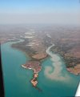
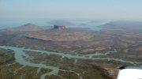
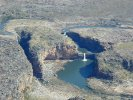
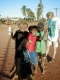

June
- 2nd
- 3rd
- 4th
- 5th
- 6th
- 7th
- 8th
- 9th
- 10th
- 11th
- 12th
- 13th
- 14th
- 15th
- 16th
- 17th
- 18th
- 19th
- 20th
- 21st
- 22nd
- 23rd
- 24th
- 25th
- 26th
- 27th
- 28th
- 29th
- 30th
July
- 1st
- 2nd
- 3rd
- 4th
- 5th
- 6th
- 7th
- 8th
- 9th
- 10th
- 11th
- 12th
- 13th
- 14th
- 15th
- 16th
- 17th
- 18th
- 19th
- 20th
- 21st
- 22nd
- 23rd
- 24th
- 25th
- 26th
- 27th
- 28th
- 29th
- 30th
- 31st
August
Edlef was brought directly to the airstrip and started loading Grummy while we found another lift after having finished the shopping. Again an Aboriginal that stopped, which in fact is not all that surprising, as Fitzroy Crossing is an Aboriginal community and 90% of the population therefore is indigenous. We couldn't understand a word he or his (presumably) grandson were saying, but the old man understood that we wanted to go to the local airfield and drove us there - friendly people here in Fitzroy Crossing, we must say.
Refueling was a bit of an issue. Throughout the whole morning I had tried to get a hold of the refueler, but all I got to talk to were his various answering machines. He wasn't at the 
{kind=link}
Geikie Gorge was completely forgotten and hence Tunnel Creek was the first waypoint on our flight to Kalumburu. The tunnel was, as one might have expected, not all that spectacular from the air. Windjana Gorge was nice, but we couldn't spot any crocks from the plane.
The original schedule read Broome as our next stop. However, the Kimberly is so nice that we had decided to stay a bit longer in this area and do a big loop up to the northern shores before going further west.
Some of the nice spots we have seen on FlacrOz are so remote that only very few Australians have seen them. Mount Trafalgar and the Mitchell Falls in the north Kimberley are certainly two of them. Each worth the detour we were doing.
{kind=link}

{kind=link}

Jim, the pilot from Kununurra, had recommended the Truscott airstrip in the very north and said that we should greet Alex, a friend of his, if we were going there. I had tried to call Truscott earlier, but the number that was listed in the ERSA (and the Country Airstrip Guide and the AOPA Airfields 2000 book) didn't work ("Telstra would like to advise that the number you have dialed is not connected. Please check the number and try again"). A person from Kalumburu, which I had talked to regarding accommodation, had claimed that the Truscott airstrip was unusable. When we flew over it however, it didn't seem unusable at all. There was a twin-engine aircraft parked right next to the strip and we also spotted what seemed to be a fuel-truck - so we decided to have a go and land to check whether these guys had cheaper fuel then Kalumburu, where a liter of AVGAS cost $1.80. Now we are some of the privileged people that have landed on this old and famous World War II airstrip. Not everybody can say that, as it is a private airstrip and in fact is closed to the public. The landing fee is a hefty $250 (if you get permission to land at all). Usually it's only used by planes and helicopters going to offshore oil and gas platforms. The guy that told us all this immediately after we had landed promised to forget that we had landed.
Kalumburu is an Aboriginal community with a picturesque mission set among giant mango trees and coconut palms. The airstrip dates back to WWII (built by the Aboriginals with their bare hands) and there are still a few crashed planes in the vicinity. The Japanese even bombed Kalumburu and its mission.
I felt set back 40 years in time when I first walked down the main road to the mission at the other end of town. Not only was the time different, the place seemed also another - this wasn't like anything we had seen in Australia before. It was more like one imagines Africa. Only a few white people, the rest being, mostly very dark skin, Aboriginals. The kids 
{kind=link}
Kalumburu is very remote - even for Australian standards. It would take Grummy one hour and fifteen minutes to fly from Kalumburu to Kununurra. By car it takes one and a half days in 4WD on bumpy corrugated dirt roads!
Many interesting stories and rumors are told here. Tom, a biology Ph.D. student, doing his thesis on bush fires, told us a few of them. It is said that the crew of a ship that ran on ground on an island nearby buried 50 cases of whiskey on the beach - that whiskey would now be more then 50 years old! Somewhere else, nobody knows exactly where of course, there are said to be weapons (stored in oil) from WWII. The most mysterious story goes on a secret Japanese airbase somewhere in this area. An old Aboriginal has told Tom that he reckons he knows where it is, but he won't tell anybody because he never got any payment or recognition for the construction of Kalumburu's own airstrip.